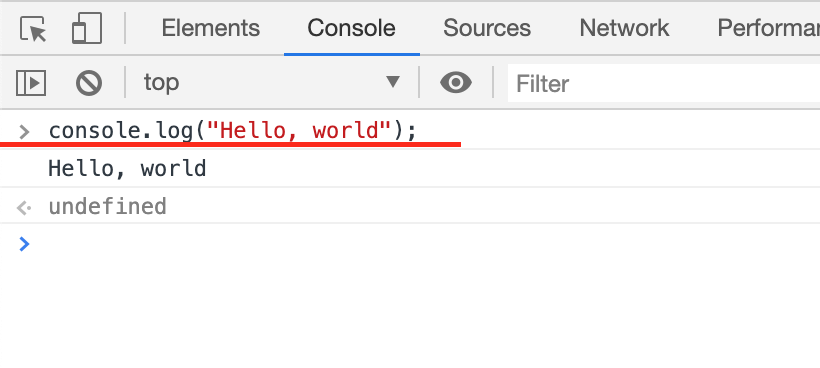
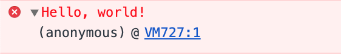

The Console
What Is The Console?
The Console is simply an interface that allows us see output logged from within our code, this comes in handy when you're trying to debug your code, or when you want to see what the structure of a certain data looks like.
Figure 1

In the figure above, we see what data(Hello, world! displayed underneath the console log command) logged to our Console looks like.
Console Object
In Javascript, in order to log information to our console, we will need to make use of the console object, we can call several methods on this object that will output information to our Console.
There are three main methods we will mostly be using on the console object to log information to the Console, these three are.
1. console.log
This will log data to our console, we can log data in the form of, numbers, plain text, and more, see example below.
Example
console.log("Hello, world!");
This will output to the console.
Hello world!
You can go ahead and try this.
2. console.warn
This is mostly used to output warnings to the console. Say for example you built a library that has a certain feature and in an upcoming release you know you are going to remove this feature, you can go ahead and use this method to display warnings in the console, so that when a developer is using your library they can see the warning when they open the console, stating the removal of that feature so they can switch to an alternative from within their code. Below is an example for how to use this command.
Example
console.warn("Hello, world!");
This will output to the console.
Hello world!
Depending on the environment this will be colorcoded to make it more obvious that you're trying to display a warning to the developer.
Figure 2

3. console.error
This is used to display errors that occured within your code, this can be used to log errors for developers to see what went wrong in your code, this could be caused by an input error(user generated), or syntax error(developer generated). This is mostly used when trying to display errors so the developer can trace where the error is coming from, it can receive plain text, or an Error object. See example below.
Example
console.error("Hello, world!");
This will output to the console.
Hello world!
Depending on the environment you are viewing the console, this logged info can be colorcoded to make errors easy to spot in the console.
Figure 3

Conclusion
There are several other methods we can call on the console object but for now, these three will suffice for most of our use cases. You can see the full list here.